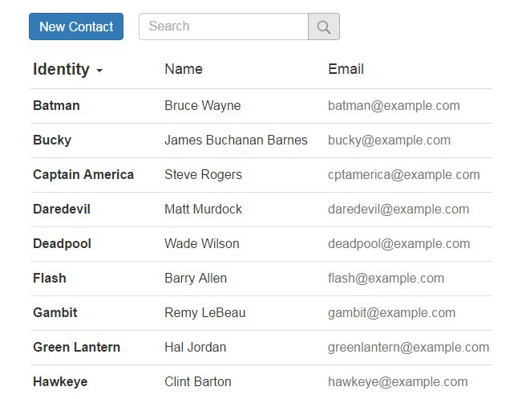
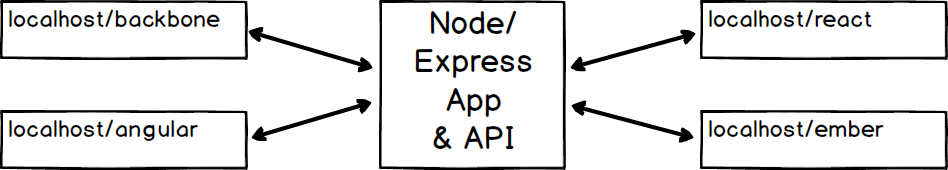
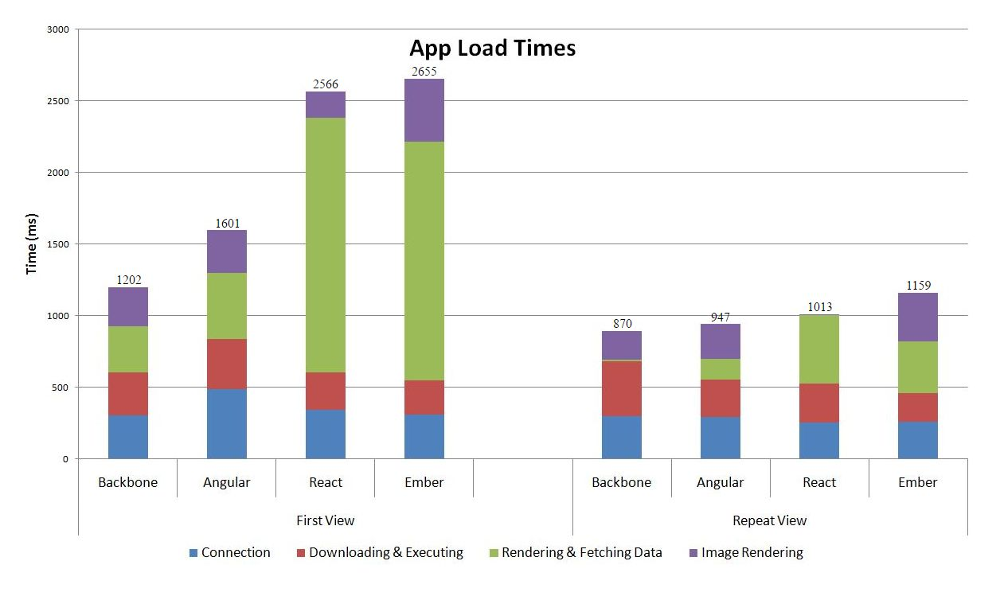

Comparing a simple single-page-app with various front-end frameworks.
This is an accompanying blog post for a talk I gave at ExploreTech in Toronto on June 15, 2016. The structure and details are similar to what was presented at the meetup. I plan to continue updating this page with new results as the project evolves. Please keep coming back to check for updates and contact me if you would like to get involved with this project.
The front-end framework landscape is rapidly changing and it seems that every year or so there is a new favorite framework. This leads to companies blindly using frameworks for their new projects without thinking about the framework's strengths and weaknesses.
I once worked on an Angular app that took over 3 seconds to load because it had over 600 2-way data bindings on the page. Angular has a digest cycle that handles the changes of the data bindings. The more data bindings are on the page, the longer the digest cycle takes, which can lead to the troubling situation of each cycle taking longer than the cycle's repetition time. This made me wonder if the company used Angular simply because it was the popular framework at the time.
When starting a new project, it can be hard to decide which front-end framework would be best for your project. The field is large and rapidly changing. It's understandable that a team of developers has not explored all the options. I decided I wanted to explore the top frameworks and try to determine their strengths and weaknesses in order to help other decide on the right front-end framework for their projects.
My first step was to do a Google search to see if anyone else had already done a comparison. I came across a few articles that would compare the features of each framework but none compared code for an application written in each framework or compared the load times of each.
I decided to do just that. I wanted to come up with a simple single-page application that could be extended to use various features, displayed in various layouts, and resemble a production application. I also didn't want another To-Do application. I decided to write a contact list application.
The contact list application would make use of the CRUD operations and communicate to a back-end API. It could also do computationally expensive operations such as sorting, searching, or filtering. The contact list details could grow to have many fields and the list could be presented as a list of contacts or in a grid layout of contact cards. It has many features a production application might use and could even be included as a small part of a larger application.
As I was planning and learning the frameworks I didn't already know, I came across a tutorial on Tuts+ by Andrew Burgess that covered the frameworks I chose to compare. It turns out that he also used a contact application. I had almost given up on my project at this point but, after watching the videos that had been published a year ago, I decided to continue with my project since his tutorial only covered the basic CRUD operations and were using older versions of Ember and React. I wanted to go beyond where he left off and I wanted the project to continue to grow with new features, more frameworks, and continuous improvements.

Initially, the applications would be small enough that I could get away with a small and not well thought out architecture. I'm sure the applications will be re-written many times as the project grows. I also had a deadline to get the applications working so that I could present my findings at the ExploreTech meetup in Toronto on June 15, 2016.
The server-side code is a Node/Express application that handles the API and serving the public pages for each application. I wanted to minimize discrepancies in the timing results for the page loads so I designed the system so that each framework runs off the same server-side application. I also wanted to reduce any latency on the server and decided to forgo a database for the moment. The data, I chose to use superheros, is located within a JavaScript object on the server which is sent via the API to each framework.

Each framework is using the same CSS and image files located in the public directory and each has a folder containing their app's index.html, app.js, and other needed files. This means that I wouldn't have to stop the server, edit some code, and restart the server to switch between each framework. I would access each framework by going to localhost/angular/ for example.
There are many great tutorials out on the internet for each of these frameworks, but I wanted to give a quick overview of each framework before I go into my findings.
Backbone has been around since 2010. It is not considered a framework, but more of a library. It has no opinions on how your code should be structured or what your files should be named. It is designed for developing single-page applications and doesn't require any special structure or syntax like other frameworks. However, it does require a lot of manual work.
As you can see in the code extract from my project below, the contact list uses an Underscore template for the view. I have to manually add each contact from the collection by first rendering another contact item template and appending it to the ContactsListView template.
var ContactsListView = Backbone.View.extend({
template: _.template( $('#ContactsListView').html() ),
focusedColumn: 'identity',
events: {
'click .contact-item': 'showContact',
'click .contact-item td': 'showContactFromCell',
'click .contact-heading .identity': 'changeIdentityOrder',
'click .contact-heading .name': 'changeNameOrder',
'keyup .search-input': 'searchContact'
},
initialize: function () {
this.collection.on('sort', this.searchContact, this);
},
render: function () {
this.el.innerHTML = this.template({ contacts: this.collection.toJSON() });
this.collection.each(this.addContact, this);
return this;
},
addContact: function (model) {
model.focus = this.collection.sort_key;
var view = new ContactsItemView({ model: model });
this.$('tbody').append(view.render().el);
...
Angular has been around for just as long as Backbone and is maintained by Google. It was designed to enhance HTML by adding special ng-* attributes, which Angular calls directives, to the HTML tag allowing JavaScript code to be executed in context of the HTML. This can help developers understand what is going on by reducing the amount of cross-referencing needed between files.
The ng-repeat attribute allows the HTML tag to be repeated for each item in the list. In the code below, I'm adding a new table row for each contact in the contacts array, which I've also sorted and filtered right there in the attribute value. I've also included an ng-click attribute which allows a JavaScript function to be called on the click event without needing to manually set up event handlers. Further down, I also use the ng-class directive which will conditionally apply a CSS class. Angular provides many of these directives but you can also write some yourself.
<tr ng-repeat="c in contacts |
orderBy:sortType:sortReverse |
filter: searchText"
ng-click="showContact(c.id)"
class="contact-item">
<td class="identity"
ng-class="{bold: sortType=='identity'}">
{{c.identity}}
</td>
<td class="name"
ng-class="{bold: sortType=='name'}">
{{c.name}}
</td>
<td class="email">{{c.email}}</td>
</tr>
I'm using Angular 1 in my project as Angular 2's release candidate was just being published. I do plan on writing the application using Angular 2 in the near-future. Angular 2 has many improvements to the speed by using a virtual DOM similar to React and eliminating the $scope variable. It also encourages developers to use TypeScript which provides data typing to JavaScript.
React was initially released by Facebook in 2013 but it became popular in 2015. React applications are structured using modular components which leads to better scalability and maintainability. It is most known for its fast and efficient DOM interactions using a virtual DOM. Facebook also created JSX which adds XML syntax to JavaScript. The JSX preprocessor will parse the HTML within the React code to create a virtual DOM. By doing this, the React framework can reduce expensive DOM interactions by only applying the changes to the page instead of forcing a full-component refresh.
React is a view-only library and not a full framework. I used React-Router and React-Resource to handle the routing and data for my application.
One feature I liked about React is the componentWillMount function. This allowed me to run some code, such as fetching the contact list, before the component was rendered. There is also functions that run after it mounts, just before it gets unmounted, or just after it is unmounted. But the one thing that tripped me up while working in React is the need to use the className attribute in the HTML code instead of using class. The reason they changed it is because class is a reserved word in JavaScript. But it did make me wonder why my CSS classes were not being applied every time I added HTML.
class Contact extends React.Component {
componentWillMount() {
this._fetchContact();
}
render() {
var c = this.state.contact;
return (
<section className="contact-form">
<img className="contact-img" src={'/img/'+c.imgUrl} />
<h2>{c.identity} - {c.name}</h2>
<p>
<label>Identity: </label>
<input placeholder="Identity"
name="identity" value={c.identity}
onChange={this._change.bind(this)} />
</p>
<p>
<label>Name: </label>
<input placeholder="Name"
name="name" value={c.name}
onChange={this._change.bind(this)} />
</p>
...
Ember was released in 2011 and is a framework made up of best practices. Its philosophy is "convention over configuration" meaning that if you follow the Ember way of doing things, everything just works. With Ember's CLI (command line interface) you can generate scaffolds for just about everything in your application. If you want to create a new route then using the CLI to generate the route will create all the files with the minimal content require to have everything work.
Some people don't like the magic that happens behind the scenes and it does make Ember harder to learn. However it does allow developers to write powerful web applications while writing fewer lines of code. Ember was designed for efficiency. It includes many tools to help development such as testing tools and a browser extension for debugging.
The Ember Data library facilitates communication with a RESTful JSON API by keeping the application's model in sync using functions such as save. Ember also provides computed properties which allows you to manipulate a variable's value before it is sent to the Mustache template. In the code below, I'm modifying the image path, but it could also be used to get the full name by concatenating the first and last name variables. If the image URL changes, the variable will automatically be updated with the new value.
app.ContactController = Ember.Controller.extend({
actions: {
update: function () {
var model = this.get('model');
model.save();
this.transitionToRoute('contacts');
},
delete: function () {
var model = this.get('model');
model.deleteRecord();
model.save();
this.transitionToRoute('contacts');
}
},
imgUrl: Ember.computed('model', function () {
return '/img/' + this.get('model').get('imgUrl');
})
});
While the major comparison between each framework is subjective and a matter of preference, I wanted to add more quantitative results to my comparisons. I decided to measure the page loads for first views and repeated views.
I wanted to note that the following results are preliminary. The code is not fully optimized and it is not running on a production server. While the code is being minified the transfer itself is not being compressed. I acknowledge that there are many improvements to be made with the code and host configurations. The timing results were obtained using webpagetest.org.

As with programming languages, I discovered that the more frameworks I knew the easier it was to learn how to use a new one. They all follow the same basic principles and structures. However many have different programming styles and it was difficult to rapidly switch contexts between the frameworks. The main difference between the frameworks is a matter of preference more than it is about performance. Each framework has similar speeds depending on the application's features and as with all coding there is more than one way to do things.
If you prefer to handle everything manually, Backbone may be more appealing to you. I find Angular to be easiest to learn as most of the JavaScript is written in the HTML. I would only recommend using React if you have a clear component structure to your application with a lot of data changing, and you might want to look at Redux to handle the state of your application. If you come from a Rails background, Ember may be the most comfortable framework for you.
As I mentioned at the beginning of this post, I do plan on making this an ongoing project. I want to keep improving and optimizing my code, as well as keep the applications up to date with the newest framework updates. I also want to grow the application by adding more features and write the application using more frameworks.
If this project is interesting to you, and you want to get involved by helping improve existing code or add more features/frameworks, please follow my github repository and reach out to me.